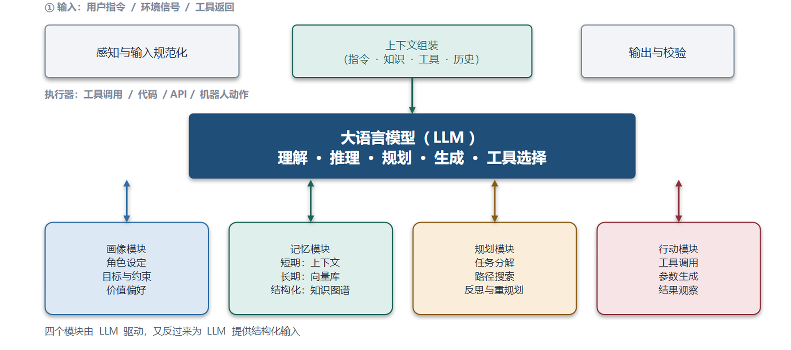

6.2 核心组件
6.2.1 感知、决策、执行、环境与通信
把一个智能体拆开来看，它由五个部分构成：感知器、决策系统、执行器、环境与通信模块。前四者构成单个智能体的闭环，通信模块则用于多个智能体之间、或智能体与用户之间的信息交换。
感知器（perceptor） 负责采集环境中的信息，并把异构输入规范化为决策系统可以消费的形式。对软件智能体而言，感知的输入主要有四类：用户输入的自然语言、结构化的 API 响应、文档与网页内容、以及系统内部的状态变化（如定时器触发、审批状态翻转）。感知器的工程难点不在”获取”，而在”规范化”：同样的语义，可能以 JSON 字段、表格单元格、PDF 段落或聊天消息的形式出现，需要统一成带来源标注的文本片段，才能进入上下文。
决策系统（decision system） 是智能体的”大脑”，负责处理感知输入并做出相应决策。在 LLM 智能体中，它通常由三部分协作完成：语言模型负责语义理解与推理，上下文管理器负责决定”此刻应该让模型看到什么”，规划器负责把目标拆成可执行的步骤。三者不是并列的模块，而是一个嵌套关系——规划通过提示词驱动模型完成，模型的输入又由上下文管理器组装。
执行器（actuator） 负责实施决策系统的指令，对环境进行物理或虚拟的操作。软件智能体的执行器是工具（tool）与接口（API）：搜索、计算、读写文件、发送邮件、调用业务系统。具身智能体的执行器是电机、机械臂、扬声器。执行器的设计原则是窄接口、强校验、可回滚：每个工具只做一件事，参数经过 schema 校验，副作用可以撤销。原因很直接——模型会犯错，而执行器是错误真正落地的地方。
环境（environment） 是智能体所感知和行动的对象。环境的性质决定了智能体的设计约束。表 6-4 给出了常见的环境维度及其工程含义，可以看到，“部分可观测”与”动态”这两个维度对系统复杂度的影响最大：前者要求记忆与状态估计，后者要求重规划与并发控制。
通信模块（communication module） 在多智能体系统中承担消息传递、任务分派、结果汇总与冲突消解。它也可以是智能体与用户之间的界面层，负责把内部轨迹翻译成用户能理解的过程说明。通信模块的设计直接决定了多智能体系统是”协作”还是”互相干扰”。
表 6-4 环境维度及其对智能体设计的含义
| 维度 | 取值 | 对设计的含义 |
|---|---|---|
| 可观测性 | 完全 / 部分 | 部分可观测时需要维护内部状态与记忆，并显式处理不确定性 |
| 确定性 | 确定 / 随机 | 随机环境下同一动作可能产生不同结果，需重试、校验与概率化决策 |
| 静态性 | 静态 / 动态 | 动态环境下计划会失效，需支持中断、重规划与并发冲突处理 |
| 离散性 | 离散 / 连续 | 连续动作空间难以用语言精确表达，常需专门的控制器承接 |
| 主体数量 | 单 / 多 | 多主体时需要协议、角色分工与共享状态，收益与开销同时放大 |

图 6-2 以 LLM 为认知内核的智能体统一架构
说明：图中四个模块（画像、记忆、规划、行动）由 LLM 驱动，又反过来为 LLM 提供结构化输入；上下文组装是把外部信息送入模型的唯一通道。
图 6-2 给出了这一架构的整体形态。可以看到，LLM 处于中心，但它并不是孤立地工作：上方是输入规范化与上下文组装，下方是四个能力模块，右侧是输出与校验。这一”中心辐射”结构的关键在于，所有模块之间的信息交换都必须经过上下文窗口，而上下文窗口是稀缺资源。后文讨论的上下文工程，正是围绕这一瓶颈展开的。
6.2.2 决策系统：以 LLM 为认知内核
决策系统是智能体能力差异的主要来源，值得单独展开。在 LLM 智能体中，它承担五项职责，这五项职责大致对应模型在系统中被调用的五种”角色”。
第一，理解用户意图与指令。 解析复杂的自然语言输入，理解用户的目标、约束与隐含前提。“下周三去上海开一天会，预算三千”这句话里，至少包含四个约束（时间、地点、时长、预算）和两个隐含前提（从常驻地出发、当天往返或住一晚）。模型需要把这些抽取成结构化的任务描述，才能进入规划。
第二，知识检索与应用。 模型内部的知识可以回答大量常识性问题，但涉及企业制度、实时价格、专有数据时并不可靠。因此决策系统需要知道”什么时候该查、查什么、查到之后怎么用”。这一判断本身就是一项能力：过早检索会浪费预算，过晚检索会基于错误前提规划。
第三，规划与推理。 把复杂任务分解为子任务，确定执行顺序，评估不同路径的优劣。第 6.4.2 节会详细讨论规划技术。此处只需强调一点：LLM 的规划是”语言空间中的规划”，它输出的是步骤描述而非可执行代码，因此需要框架层把描述翻译成调用序列，并在执行中校验前提是否成立。
第四，决策支持。 评估不同行动方案的潜在结果，并根据目标选择最佳行动。这一步在数学上对应效用最大化，在实践中往往表现为”让模型比较几个候选方案并说明理由”。比较—选择的模式比”直接给答案”更可靠，因为它把隐式的权衡显式化了。
第五，生成行动指令或内容。 生成与外部工具交互的指令（如 API 调用参数），或者直接生成面向用户的自然语言回复。工具调用的参数生成是错误高发区：字段名、类型、单位、枚举值都可能出错，因此必须有 schema 校验与失败重试。
这五项职责并不总能由一次模型调用完成。工程上的常见做法是分工调用：用一次调用做意图解析，用一次做规划，用若干次做执行，用一次做结果校验。每次调用的提示词、可用工具与上下文都不同。这种”一个模型、多种角色”的模式，是当前智能体系统的主流形态，也是第 6.5.6 节讨论上下文工程的动因。
6.2.3 执行器：工具、代码与物理动作
执行器是智能体与世界的接触面。按作用对象，可以把它分为四类。
信息类工具：搜索、网页抓取、数据库查询、文档检索。它们不改变世界状态，只把外部信息带入上下文。风险在于信息来源不可靠与提示注入——网页中可能嵌有”忽略之前的指令”之类的文本，被模型误当作指令执行。
计算类工具：代码解释器、计算器、符号求解器、数据分析库。它们把”需要精确计算”的部分从模型转移到确定性程序。这是提升可靠性的最有效手段之一：模型不擅长多位数乘法，但擅长把问题写成乘法表达式。
事务类工具：下单、支付、改签、发邮件、写数据库。它们有副作用，且往往不可逆。对这类工具，工程上要求”两段式确认”——先生成待执行的计划并展示给用户，确认后才落地；同时要求幂等键与操作日志，以便失败重试与事后审计。
物理类工具：机械臂、移动底盘、无人机。它们把数字决策转化为物理动作，对实时性与安全性要求最高，通常需要独立的安全控制器兜底，不能把安全完全托付给语言模型。
工具的数量不是越多越好。工具清单会占用上下文，工具之间的语义重叠会让模型选择困难。经验法则是：单一职责、命名自解释、参数强类型、错误信息可读。当一个工具的错误信息能让模型自己纠正参数时，这个工具的设计就是合格的。
6.2.4 环境与通信：从单智能体到多智能体
环境不只是背景，它主动塑造智能体的行为。一个重要的区分是可逆环境与不可逆环境。在沙箱、代码仓库、文档草稿中试错的成本很低，智能体可以大胆探索；而在支付、生产部署、医疗建议中，一次错误就可能造成不可挽回的后果。因此，成熟的系统会把任务切分为”可逆区”与”不可逆区”：在可逆区让智能体自主迭代，在不可逆区强制人工确认。这一设计思想被称为”沙箱优先”（sandbox first），是第 6.6 节治理讨论的基础。
通信模块的引入，使系统从单智能体走向多智能体。通信的内容通常包括三类：任务分派（谁做什么）、状态同步（做到哪一步了）、结果汇总（做出了什么）。通信的代价是显著的：消息本身消耗 token，消息的语义可能在传递中失真，多个智能体并发修改共享状态还可能产生冲突。因此，多智能体并非”越多越好”，只有当任务可以被清晰切分、且子任务之间耦合较低时，多智能体才带来净收益。第 6.6.1 节会进一步讨论编排模式。